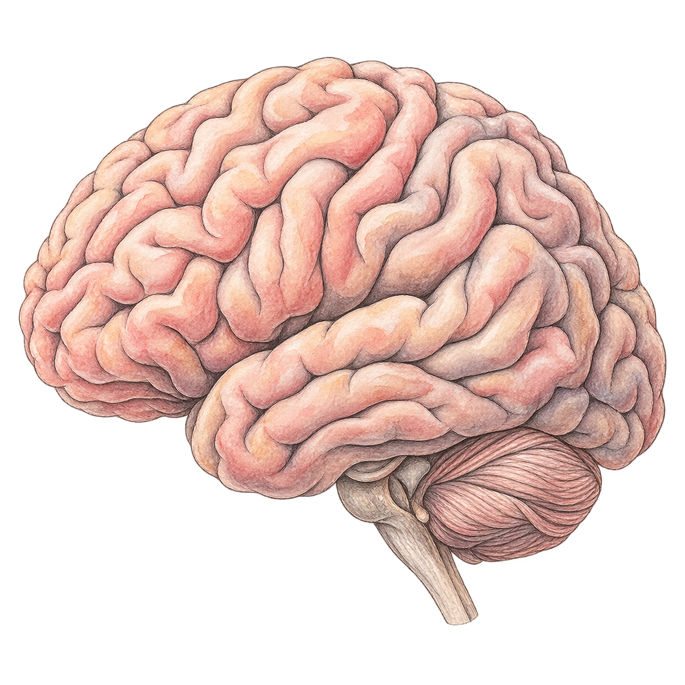

What you learn and choose today can change what you can do later. Some choices open opportunities. Some make the next step harder. Let’s follow one example.
Mika’s example life — not a prediction
Choose an example age to see a route to today.
A beginningMany possible futures
The route to todayRoutes not takenRoutes still possible
A picture of possibilities, not a prediction. Up and down are not scores.
Age 8: Mika asks for a drawing of equal parts and practices connecting the picture to a fraction. This is a starting point, not mastery of everything that follows.
Move over the traveled route to preview an earlier moment.
The starting moment
Age 12 is a separate looking-ahead example below.
One moment, three possible next steps
Looking back: age 12
Equivalent fractions can support ratios in a recipe. What happens here is about preparation and support, not a score for Mika.
What Mika does:
What changes:
Named route outcomes
Another possible choice
What you learn becomes something to build on.
Learning can help with something new, though the new thing still needs learning.
One idea, more ways to use it
A fictional example
Notice equal parts
Ari shares a circle equally. Each person gets one half.
↗
Make a connection
Two quarters cover the same amount as one half.
↗
½¼ + ¼
Use it somewhere new
A recipe needs half a cup. Ari can measure it with two quarter-cups.

Progress can make you curious again.
Ari enjoys figuring this out and chooses another puzzle. If it is confusing, an explanation or a different example can help.